Introduction to Computer Architecture
Computer architecture is a wide branch of computer science that seeks to find answers to questions such as, “What makes up a computer?” and, “How is it that we can use a computer?” The answers to these questions are continuously changing, but we will attempt to give a simple answer in this lesson.
In a previous lesson, we discussed how computer hardware works. Recall that all general-purpose computers, at a minimum, consist of the following hardware components: a central processing unit (CPU), main memory, secondary storage, various input/output (I/O) devices, and a data bus. The data bus is like a highway that the other components use to communicate with each other. Main memory is used to store data and programs that are currently being used. I/O devices allow the outside world to communicate with the computer. The CPU is the device that is responsible for actually executing the instructions that make up a program.
Let’s further discuss the brains of the computer, the CPU. The operation of the CPU is governed by the instruction cycle.
The instruction cycle is a procedure that consists of three phases: instruction fetch, instruction decode, and instruction execution.
The CPU’s task is to perform the instruction cycle over and over until explicitly instructed to halt. The fetch phase of the instruction cycle consists of retrieving an instruction from memory. The decode phase concerns determining what actions the instruction is requesting the CPU to perform. Instruction execution involves performing the operation requested by the instruction.
The layers of a computer system
To fully understand computer architecture, it is important to understand the idea of abstraction as it is used in the field of computer science. Abstraction is an idea of dealing with complex and interconnected systems whereby a user is only interested in the operations of a certain level of complexity and suppresses more complex details. Abstraction is analogous to looking at Google map of a large country, such as the USA. We can see the individual states, large lakes, surrounding oceans, and neighboring countries. At this level of abstraction, one is unable to see the finer details within a state (such as the names of cities, towns, and major roads). However, zooming in provides an increased level of detail. The entire country is no longer visible; instead, perhaps only a single state (e.g., Louisiana) and its neighbors are visible. At this zoomed in level, we can now see some of the cities and major roads. However, we cannot see some of the details of the zoomed out level such as the states that are not immediate neighbors or the oceans. If we zoom in to an even lower level, we can see street names, major buildings, and so on. Again, we lose some of the details at the higher levels. Dividing a complex system (like a map) into levels that progressively abstract away detail allows users of the system to only deal with information that is relevant at a given time.
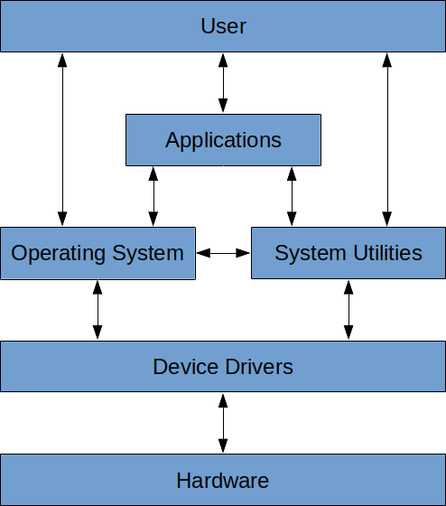
A computer is a very complex system consisting of multiple layers (see Figure 1). At the very top is the user. Users interact with computers in a variety of ways. That is, they can (and do) interact directly with applications (like a spreadsheet application, a game, or a Web browser). Users can also interact directly with the operating system (e.g., through its GUI or via the console) and with system utilities (think of applications that are provided by the operating system). The application layer is the next layer, immediately below the user. It is the layer that a computer user typically interacts with. For example, a user can type and send an email without needing to know how the characters on the screen are made to appear on another computer perhaps one thousand miles away. A user might double-click an audio file on the desktop without needing to know how the computer understands what a double-click is or how to “play” the audio file.
The next layer is the operating system layer. This layer understands user inputs (like typing or double- clicks) and figures out ways of interpreting and executing those inputs. There are many examples of operating systems (e.g., Linux, Windows, MacOS, Unix, Solaris). Of these, Window is still the most common. What is the operating system on your Raspberry Pi? At its core, the operating system is what allows users to interact with the computer and actually make use of it.
System utilities are like applications, but provided directly by the operating system. In one sense, they provide an interface to certain parts of the operating system that allow users to do frequently needed things. For example, the system utility of copying or moving files is often used. Users don’t have to install an application that permits copying and moving files around. This is a system utility provided by the operating system. Since system utilities are essentially embedded in the operating system, this layer sits at the same level as the operating system layer.
The layer beneath the operating system layer is the hardware abstraction layer (or HAL). Sometimes, this layer is referred to as the device driver layer. There are many different types and designs of computers, and this layer makes sure that the computer hardware acts the same regardless of the computer’s design. For example, it makes sure that the “on” button switches on the computer regardless of where it is located. It makes sure that hitting a specific button opens the CD drive. It provides the operating system with clear instructions on how it can interact with the physical hardware of the computer.
The bottom layer is the hardware layer. It represents the physical, tangible stuff that you can see or touch (e.g., keyboard, monitor, mouse, case, power supply, motherboard, etc).
Fundamentals of digital logic
Becoming really good at computer science means having a good understanding of all of the layers, what they do, and how they are used. We will spend most of this lesson dealing with the hardware layer. A lot of devices have two states: a voltage is high or low, a switch is open or closed, a light is on or off. There are many ways of modeling these two-state systems; some are very concrete and some are more abstract. We’ll look at a number of these models, beginning with simple models that are based on mechanical switches and light bulbs.
One of the most basic electrical connection is a light bulb that is either connected to a power source (or not). A slightly more complicated version of this includes a switch that can be either open or closed. These switches are similar to the electrical switches in your home. We will assume that these switches are connected to a source of power that can supply current. The potential of a power source, such as a battery, is called voltage and is measured in units called volts (V). Voltage sources typically have a positive and negative end (called a terminal), and the difference in the potential between both terminals is what we use as the measurement of voltage. Voltage sources can produce either alternating current (AC) or direct current (DC). With DC, one terminal is always positive, and the other is always negative. Examples of DC sources are batteries such as the ones you would put in a small radio, watch, or flashlight. With AC, the two terminals keep on swapping positive and negative roles very quickly (60 times per second!). Examples of AC sources are wall outlets that you would typically find in your home.
The simplest circuit that can be built contains a power supply, a single switch, and a light bulb. If the switch is open, the light is off; if the switch is closed, the light is on. The following figure illustrates both of these cases:
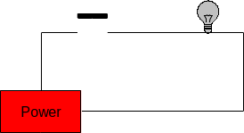
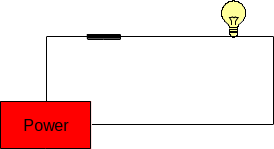
The state of these two circuits can be expressed in table form as follows:
| Switch | Light |
|---|---|
| Open | Off |
| Closed | On |
We can increase the complexity of this circuit somewhat by adding a second switch between the first switch and the light bulb. This results in four possible configurations:
- both switches are open;
- the first switch is open and the second is closed;
- the first switch is closed and the second is open; and
- both switches are closed.
This is illustrated in the figure below.
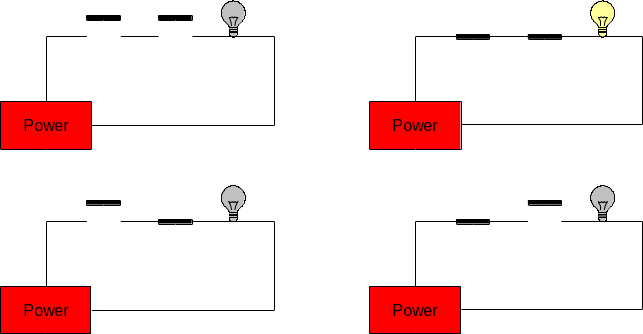
These circuits are called series circuits since the two switches occur on the same path from the power source back to itself. In series circuits, when either one or both of the switches are open power will not flow, and the light bulb will be off. Only when both switches are closed does power flow, and the light bulb illuminates. Said another way: if both switch A and switch B are closed, then the light will turn on.
The relationship between the states of the two switches (open or closed) and the state of the light bulb (on or off) is summarized in the following table:
| Switch A | Switch B | Light |
|---|---|---|
| Open | Open | Off |
| Open | Closed | Off |
| Closed | Open | Off |
| Closed | Closed | On |
Another type of circuit can be designed using two switches. This second type of circuit arranges the switches in parallel rather than in series. In a two-switch parallel circuit, each of the switches is placed on a separate path between the power source and the light bulb. The figure below illustrates the four possible configurations of a two-switch parallel circuit. As was the case with the series circuits, there are four possible configurations of the circuit (in fact, they are exactly the same as before). When both switches are open power does not flow and the light bulb is off. However, whenever either or both of the switches are closed, power flows and the light will turn on. Said another way, if switch A or switch B is closed, then the light will turn on.
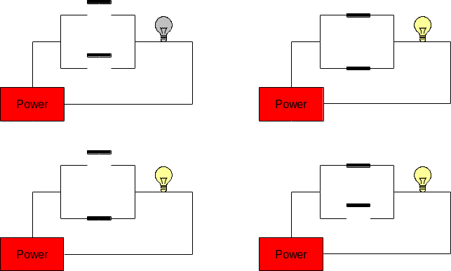
The relationship between the states of the two switches (open or closed) and the state of the light bulb (on or off) is summarized in the following table:
| Switch A | Switch B | Light |
|---|---|---|
| Open | Open | Off |
| Open | Closed | On |
| Closed | Open | On |
| Closed | Closed | On |
More complex circuits with three or more switches are possible!
LED the Way (Preview)
The next Raspberry Pi activity will involve implementing various circuits that illustrate some of the ones covered above. Initially, the Raspberry Pi will only be used as a power source. We will be connecting it to a circuit prototyping board called a breadboard, and the Raspberry Pi will provide power to the breadboard. A breadboard is used to simplify the process of prototyping connections between electronic components. It allows the making of secure connections between simple electronic devices by simply plugging them into appropriate rows or columns of the board. Here’s an example of a breadboard:
Breadboards actually derive their name from a breadboard (i.e., a wooden board on which bread is often cut). This is because early versions of breadboards were made from the wooden bread cutting workstations.
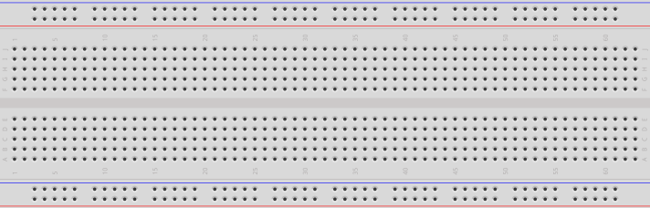
The holes in the breadboard allow electronic components (including wires) to be connected to each other. Note that there are internal connections within the breadboard. Each row along the top and bottom of the breadboard is connected. In addition, each column in the center portion is connected; however, there is a disconnect across the center gap:
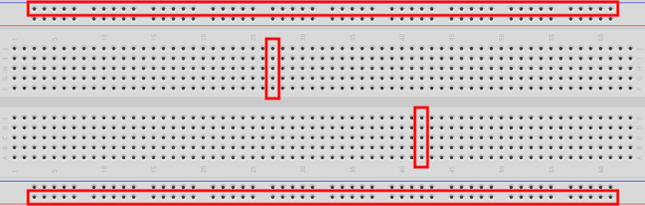
Circuit Representation
The first part of the Raspberry Pi activity will simply be to connect a power supply to a light. Since the Raspberry Pi provides DC, the light we will use is called an LED. We’ll explain this later; but for now, here’s an example of the connected electronic components for this part of the activity:
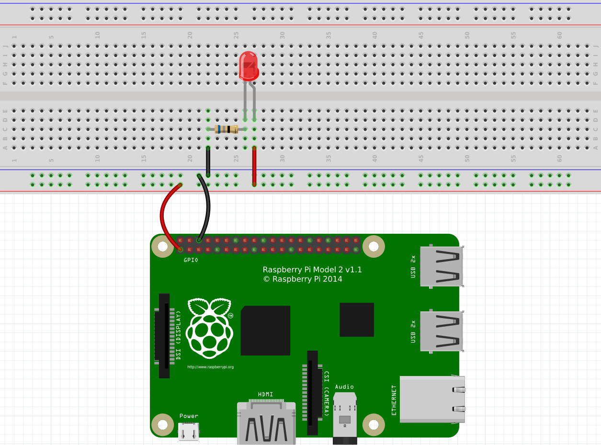
The image above is an example of the topological layout of a circuit. That is, it does a pretty good job of showing how the circuit looks physically when connected. Of course, there are many more ways to layout this exact circuit, and this is just one way. This method of diagramming a circuit is called a layout diagram because it shows the physical layout of the electronic (and other) components.
A circuit diagram (also known as a schematic) is another way of representing a circuit that only shows the connections and substitutes actual electronic components with standard symbols.
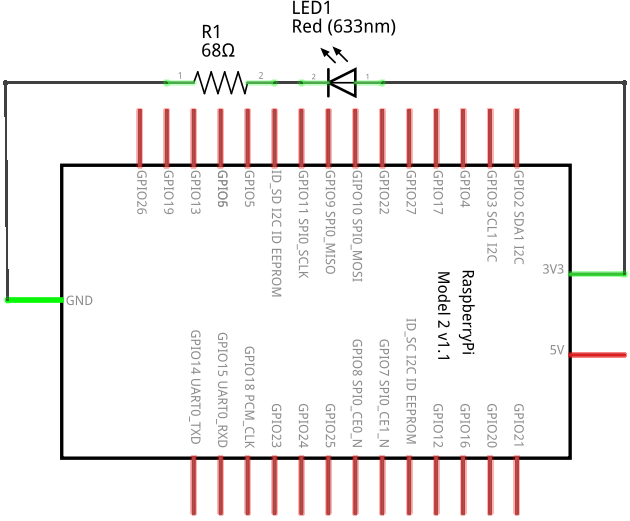
Figure 2 is an example of a circuit diagram.
A circuit diagram is a useful way to represent a circuit. Note how it can topologically be laid out in a number of ways. Various electronic components have unique symbols. For example (in the circuit diagram above), the LED has the following symbol:
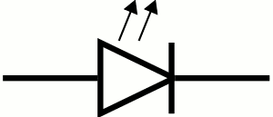
The resistor has the following symbol:
The large rectangular object with lines coming out of it is the Raspberry Pi. Technically, this represents the GPIO pins on the Raspberry Pi. We’ll discuss this more later. We will also show more electronic components and their symbols later.
The Components
Let’s go through the components, one-by-one. At the bottom is the Raspberry Pi. You will notice that there are two wires connecting some pins on the RPi to the breadboard. We typically use red wires to signify positive voltage and black wires to signify negative voltage. In DC, the negative side is called ground. So red wires connect positive power to something, and black wires connect something to ground.
The red “light” in the circuit is called an LED (Light Emitting Diode). An LED is more convenient than a traditional light bulb, because it does not require high voltage in order to turn it on. In fact, it consumes such a small voltage that typical higher voltage levels would render the LED unusable. Be careful when using LEDs, and never connect them directly to a voltage source.
An LED allows current to flow through it in only one direction (from positive to negative). LEDs have a short leg and a long leg. The short leg is called the cathode and is the negative side. The long leg is called the anode and is the positive side. The head of an LED is also flat on one side: the negative (or cathode) side. LEDs come in various colors (the one in the circuit above is red, for example). The longer leg of an LED should always be connected to the positive side of your voltage source. If it is connected backwards (i.e., with the shorter leg connected to the positive side), the LED will not light and may even burn out. For this reason, an LED should always be connected to a DC voltage source.
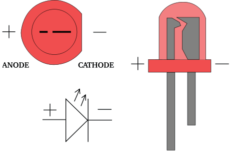
Since most power sources are too strong for typical LEDs, we must reduce the current somewhat so that the LED does not become damaged. Resistors are typically used to resist the flow of electricity. When using them with LEDs, we typically connect a resistor in series with the LED. It doesn’t matter if the resistor is on the positive or negative side of the LED. It works the same in either case. Resistors come in various resistances. Resistance is measured in a unit called the ohm (Ω). Here is an example of a 220Ω resistor:
Resistors have different values, and the value of a resistor can be determined by looking at the colored bands that surround its body. Because resistors are typically small in size (any letters written on one would be too small to be easily read), engineers invented a color code that can be used to calculate the resistance of a resistor. There are multiple online resources that can teach you how to read the value of a resistor from its colors.
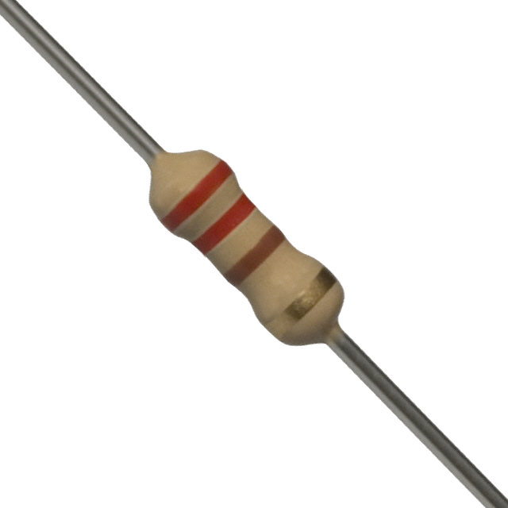
Ohm’s Law
We can calculate the resistance required to resist the flow of electricity through the LED using Ohm’s Law. Ohm’s Law establishes a relationship between voltage, current, and resistance. Let’s first fully define each of these:
Voltage is the difference in electric potential energy between two points. It can be considered as electric pressure and/or the work required to move electric charge between two points. The unit used to represent voltage is the volt (V).
Current is the flow of electric charge (or electrons moving through a wire). The unit used to represent current is the ampere (A), or amps. We typically used the symbol I to represent current in a mathematical formula (such as Ohm’s Law).
Resistance is the measure of difficulty to pass an electric current through a conductor. A conductor is some material that allows the flow of electric current. The unit used to represent resistance is the ohm (Ω). We typically used the symbol R to represent resistance in a mathematical formula (such as Ohm’s Law).
Ohm’s Law is defined as the following: \[ V = IR \]
Stated formally, the voltage (electric potential difference) across two points on a circuit is equivalent to the product of the current between those two points and the total resistance of all electrical devices present between those two points.
Consider the LED circuit above, where the red LED requires a forward voltage of 2V (i.e., the amount of voltage required across the LED to light it) and has a forward current of 20mA (i.e., the amount of current flow required through the LED to sufficiently power it on). These values are provided in the data sheet of the LED. A data sheet is a document that provides technical information about an electrical component.
We can calculate the resistance required in the circuit to ensure that the LED lights up properly and is not possibly damaged by having too much current move through it or too much voltage across it. Suppose that our power source (the Raspberry Pi) provides 3.3V. The voltage difference across the source voltage and ground is 3.3V (since ground is at 0V). According to the data sheet, the LED requires 2V across its legs and requires 20mA of current through it. Using Ohm’s Law we can solve for R. The value for V is 1.3V (3.3V at the source – 2V through the LED), and the value for I is 0.02A (20mA required through the LED). And now we solve: \[ \begin{split} V &= I * R \\ (3.3V - 2V) &= 0.02A * R \\ 1.3V &= 0.02A * R \\ 65 &= R \end{split} \]
So the resistance should be 65Ω. The closest valued resistor available is 68Ω. We can therefore use a 68Ω resistor in series with the LED. This should be sufficient to turn it on brightly without damaging it.
You may have noticed that resistors also have a wattage rating. To explain this, we must first discuss electric power. Electric power is the rate at which electric energy is transferred by a circuit. The unit used to represent power is the watt (W). Each component in a circuit dissipates power (as heat – usually through friction – as electrons move through the component). Therefore, each component has a power rating that provides a measure of how much power it can dissipate without breaking down. We can calculate the power dissipated in a circuit using a variant of Ohm’s Law:
\[ P=VI \]
The power in a circuit is defined as the product of the voltage across two points on a circuit and the current between those two points. In the LED example above, the total power dissipated in the circuit is calculated as follows:
\[ \begin{split} P &= V * I\\ P &= 3.3V * 0.02 A\\ P &= 0.066W \end{split} \]
To calculate the power dissipated by each component, we simply need to isolate the voltage drop across each. The current is constant in the entire circuit. So for the LED, we can calculate the power dissipated as follows:
\[ \begin{split} P &= V * I\\ P &= 2V * 0.02 A\\ P &= 0.04 W \end{split} \]
So we would need an LED rated at 0.04W. And for the resistor:
\[ \begin{split} P &= V * I\\ P &= ( 3.3V −2V ) * 0.02 A\\ P &= 1.3V * 0.02 A\\ P &= 0.026W \end{split} \]
So we would need a resistor rated at 0.026W.
In the end, we usually opt for a power rating that is greater than the actual power dissipated by the component (so that it can last a long time). A good target is not to exceed 60% of the wattage rating of the component. For the resistor, this means a power rating of 0.043W (\(0.026W / 0.6\)). Most typical resistors are rated at 0.25W (some are 0.125W and others are much higher). For the LED, this means a power rating of 0.067W (\(0.04W / 0.6\)), or 67mW. Most typical LEDs are rated at approximately 120mW. For this circuit, a typical LED rated at 120mW and a resistor rated at 1/8W would work just fine.
Logic Gates
Gates are electronic versions of the mechanical switches introduced earlier. Some gates have multiple inputs, but all gates have a single output. Just as the switches and light bulbs of the previous examples were always in either of two states, the inputs and outputs of gates are confined to two voltage states. The voltage of every input to the gate, as well as the output from the gate, must be either high (positive voltage) or low (0V, or ground). We use the symbol “1” to represent the high voltage state and “0” to represent the low voltage state.
There are three basic kinds of logic gates: and gates, or gates, and not gates. An and gate has two inputs and one output. The output is “1” (high) only when both inputs are “1” (high). In all other cases the output of and is “0” (low). Here is the symbol for an and gate (where the two inputs are on the left, and the output is on the right):
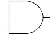
We can represent the possible states of a gate in a truth table.
A truth table defines the meaning of a gate, or circuit, by listing every possible configuration of inputs along with the corresponding output.
Traditionally, inputs are listed on the left side of the table with the output on the right. Each row of the truth table represents one configuration that the circuit can be in. Truth tables for circuits with n inputs will always have exactly 2n rows, one for each possible configuration of the inputs. The following is the truth table for the and gate, where the inputs have been labeled A and B, and the output has been labeled Z:
| A | B | Z |
|---|---|---|
| 0 | 0 | 0 |
| 0 | 1 | 0 |
| 1 | 0 | 0 |
| 1 | 1 | 1 |
Since the and gate has two inputs, its truth table will contain 22 = 4 rows. The first row of the truth table represents the situation in which both inputs to the and gate are low. In this case the output will be low as well. The second and third rows cover the cases in which one of the inputs is high and the other is low. In line two, the first input is low and the second is high; whereas in line three, the first input is high and the second is low. In either case, the output is low. The final row of the table represents the situation in which both inputs are high. In this case, the output will be high as well.
The functionality of the and gate can be implemented by the series circuit introduced earlier:
If the switches represent the inputs, A and B, then this circuit correctly produces the output, Z, of an and gate (which is the light bulb in the circuit). In fact, compare the truth table for the and gate above with the truth table for the circuit:
| Switch A | Switch B | Light |
|---|---|---|
| Open | Open | Off |
| Open | Closed | Off |
| Closed | Open | Off |
| Closed | Closed | On |
| A | B | Z |
|---|---|---|
| 0 | 0 | 0 |
| 0 | 1 | 0 |
| 1 | 0 | 0 |
| 1 | 1 | 1 |
If Open is replaced with 0 and Closed with 1, the tables are the same. The reason that truth tables are called as such is that if 1 is taken to mean true and 0 is taken to mean false, then the output of the table defines the circumstances under which the specified logical operation is true. For example, in common English usage, A and B will be true only when both A and B are true. The statement: “My cat is old and fat” is only true when the cat in question is both “old” and “fat.” If my pet cat were either young, or skinny, or both, then the statement would be false.
The thing that is so exceedingly cool about logic gates, and the circuits that implement them, is that very simple devices can capture small parts of what humans consider logical reasoning. As you can well imagine, this idea caused great excitement when first discovered.
The or gate is similar to an and gate, in that it has two inputs and one output. The output of the or gate is 1 whenever either (or both) of the inputs are 1. The only case in which the output is 0 is when both of the inputs are 0. Here is the symbol and truth table for the or gate:
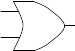
| A | B | Z |
|---|---|---|
| 0 | 0 | 0 |
| 0 | 1 | 1 |
| 1 | 0 | 1 |
| 1 | 1 | 1 |
Again, the two inputs of the or gate are labeled A and B, and its output is labeled Z. Notice that the or gate can be implemented by the parallel circuit introduced earlier:
| Switch A | Switch B | Light |
|---|---|---|
| Open | Open | Off |
| Open | Closed | On |
| Closed | Open | On |
| Closed | Closed | On |
| A | B | Z |
|---|---|---|
| 0 | 0 | 0 |
| 0 | 1 | 1 |
| 1 | 0 | 1 |
| 1 | 1 | 1 |
You should convince yourself that the behavior of the or gate captures the semantics of the word “or” as it is commonly used. The statement: “My cat is either on the couch or under the bed” is true if either the phrase “My cat is on the couch” is true or the phrase “my cat is under the bed” is true. The original statement is false only when neither of these phrases is true.
The third basic logic gate is the not gate. The not gate has a single input and a single output. The output is the inverse of the input. Here is the symbol and truth table for the not gate:
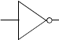
| A | Z |
|---|---|
| 0 | 1 |
| 1 | 0 |
Note that this truth table consists of only two rows rather than four (as was the case with the and and or gates). This is consistent with the claim that truth tables contain exactly 2n rows for an n input circuit. Since the not gate takes in only a single input, there are only two possible configurations that the gate can be in.
As with the and and or gates, the behavior of the not gate captures the semantics of the word. If the sentence: “My cat is black” is true, then the sentence “My cat is not black” would be false (and vice versa).
Combining Gates
Consider the following circuit:
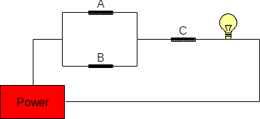
Here’s its state table:
| Switch A | Switch B | Switch C | Light |
|---|---|---|---|
| Open | Open | Open | Off |
| Open | Open | Closed | Off |
| Open | Closed | Open | Off |
| Open | Closed | Closed | On |
| Closed | Open | Open | Off |
| Closed | Open | Closed | On |
| Closed | Closed | Open | Off |
| Closed | Closed | Closed | On |
So long as either A or B is closed and C is closed, then the light bulb is lit. C must be closed in order for the bulb to be lit.
It is natural to ask at this point what an equivalent circuit consisting of logic gates would look like. Since switches A and B are in parallel, this portion of the circuit can be represented using an or gate. The output of that part of the circuit is in series with C, so it can be modeled with an and gate. The logic gate circuit shown below is thus equivalent to the switch circuit given above.
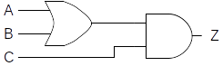
In fact, here is the truth table for this circuit:
| A | B | C | Z |
|---|---|---|---|
| 0 | 0 | 0 | 0 |
| 0 | 0 | 1 | 0 |
| 0 | 1 | 0 | 0 |
| 0 | 1 | 1 | 1 |
| 1 | 0 | 0 | 0 |
| 1 | 0 | 1 | 1 |
| 1 | 1 | 0 | 0 |
| 1 | 1 | 1 | 1 |
For readability and to make it a bit easier to derive, we can expand the truth table to provide intermediate gate outputs as follows (where Z is the output of A or B, and Z’ is the output of Z and C):
| A | B | Z | C | Z’ |
|---|---|---|---|---|
| 0 | 0 | 0 | 0 | 0 |
| 0 | 0 | 0 | 1 | 0 |
| 0 | 1 | 1 | 0 | 0 |
| 0 | 1 | 1 | 1 | 1 |
| 1 | 0 | 1 | 0 | 0 |
| 1 | 0 | 1 | 1 | 1 |
| 1 | 1 | 1 | 0 | 0 |
| 1 | 1 | 1 | 1 | 1 |
Can you fill in the truth table for the circuit below? Let Z represent the output of A and B, and Z’ represent the output of Z or C.
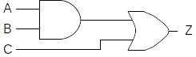
Boolean Algebra
The arithmetic that is used to reason about two-state systems was first developed by George Boole in 1854.
Boolean algebra is a mathematics based on three fundamental operators: and, or, and not; and the variables on which they operate.
Boolean variables are binary, having only two valid states: 1 (representing true) and 0 (representing false).
The operator and is written as a dot “ ⋅ ”, or is written as a plus “+”, and not is written as a horizontal bar drawn over the expression being negated. The behavior of these three Boolean operators is identical to the behavior of the corresponding logic gates. Thus, the expression \(A⋅B\) , meaning A and B, will be 1 (true) when the variables A and B are both 1 (true). The expression \(A + B\) , meaning A or B, will be 1 when either or both variables are 1. The expression not A (written \(\bar A\) ), will be 0 when A is 1 and 1 when A is 0. The relationship between the Boolean operators and the fundamental logic gates is illustrated below. In the illustration, the Boolean variables A and B correspond to the inputs to the circuit, and the variable Z corresponds to the output.
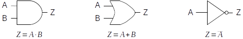
As in ordinary algebra, Boolean algebra uses parentheses to indicate which operands go with which operators. The Boolean expression \(A+(B⋅C)\) represents a completely different circuit from \((A+B)⋅C\) . In the first, B and C are fed into an and gate, with the result being sent (along with A) into an or gate. In the second, A and B are fed into an or gate, with the result being combined with C via an and gate.
As you may be beginning to suspect, there is a direct correspondence between Boolean expressions and logic circuits. Every logic circuit that can ever be constructed will have a corresponding Boolean expression, and every valid Boolean expression that can ever be written maps to an equivalent logic circuit. The process of converting between the two representations is quite mechanical: simply use the substitutions above, being sure to parenthesize Boolean expressions in a manner that preserves which operators go with which operands.
Try to write the Boolean expression corresponding to the following circuit:
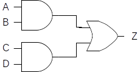
Boolean algebra provides computer scientists and engineers a powerful tool for concisely representing circuits and reasoning about their behavior. While the details are beyond the scope of this lesson, Boolean algebra allows us to do things like prove that two different circuits compute the same function; or find simpler (and thus less expensive) ways of implementing the functionality of a circuit.
Other Gates
Any device, whose operation can be defined in terms of a truth table or Boolean expression, can be implemented using only the fundamental logic gates: and, or, and not. However, a number of additional gates are usually defined, as they prove useful for practical purposes. For example, it is frequently the case that a not will immediately follow an and gate, like so:
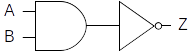
Since this is such a common occurrence, the circuit has been given a name (nand) and a gate symbol (the and symbol combined with the bubble from the not symbol). Similarly, not often follows or, so there is a nor gate whose symbol is the bubble from the not attached to the or symbol. The following figure illustrates both the nand and nor gates. Their behavior, in terms of Boolean expressions, is provided as well. It is important to remember that these gates are simply a convenience (a kind of shorthand), in that they allow a circuit to be constructed from fewer underlying components.
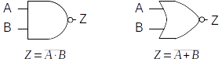
As another example, the basic and and or gates support only two inputs; however, a circuit designer will frequently need to and or or more than two inputs. For this reason multi-input and and or gates exist.
The following figure presents the three and four input and and or gates along with their Boolean expressions:
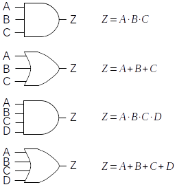
While these gates are often quite convenient, remember that it is always possible to construct equivalent circuits from the underlying two-input gates. For example, the following circuit represents one possible implementation of a four-input and gate:
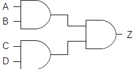
Its Boolean expression is \(Z =(A⋅B)⋅(C⋅D)\) . Note, however, that it could be designed differently (with a different Boolean expression), yet still represent a four-input and gate. For example, \(Z =((A⋅B)⋅C)⋅D\) would also work. The other multi-input gates can be constructed in a similar manner.
In addition to multi-input and and or gates, multi-input nand and nor gates can be constructed. The symbols for these gates are identical to the symbols for the multi-input and and or gates, with the exception of a not bubble attached to the output of each gate symbol. Their Boolean expressions are also identical as well, except that a not bar appears above the right-hand side of the expression.
Combinational Circuits
Combinational circuits are digital circuits that do not involve any kind of feedback. In other words, the output of a combinational circuit cannot be fed back into that circuit as input.
In this lesson, we will focus on the simplest combinational circuits. Let’s start with a relatively simple circuit, the exclusive or.
An exclusive or, or xor, has two inputs and a single output. Its behavior is defined by the following truth table, where the inputs are labeled A and B and the output is labeled Z:
| A | B | Z |
|---|---|---|
| 0 | 0 | 0 |
| 0 | 1 | 1 |
| 1 | 0 | 1 |
| 1 | 1 | 0 |
Like the standard two-input or, the xor produces a 1 (true) when either of its inputs are 1, and a 0 (false) when both of its inputs are 0. The difference between or and xor appears in the case when both inputs are 1. The standard or produces a 1 in this case. The xor generates a 0. In other words, the “exclusive or” outputs a 1 when either, but not both, of its inputs are 1.
English does not contain a unique word for expressing the idea of xor – the word “or” does double duty for both its “inclusive” and “exclusive” forms. However, one can usually tell from the context of a sentence which form is intended. For example, if you tell a child “you can have candy or popcorn,” the intended meaning is exclusive or – either candy or popcorn, but not both. On the other hand, if a friend says “I’d be happy winning either the Porsche or the Mercedes,” the intended meaning is inclusive or – you would certainly not expect your friend to become unhappy if he won both cars.
Now that we understand the behavior of xor in terms of its inputs and outputs, we can turn our attention to the problem of designing a circuit with its behavior. But how are we to begin?
One approach that often gets you moving in the right direction is to examine the truth table to determine the various circumstances under which the circuit must produce a 1. In the case of xor, there are two such cases: one in which input A is 0 and input B is 1, and another in which input A is 1 and input B is 0. Once these cases have been identified, we proceed by designing sub-circuits that will produce 1 in each of the required cases. The final step is to combine the sub-circuits together using an or gate. This is necessary because the main circuit would be true under any of the cases in which the sub-circuits generate a 1.
The following sub-circuit will generate a 1 when input A is 0 and input B is 1. Its Boolean expression is \(Z=\bar A⋅B\):
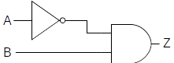
It works by negating A and feeding that result (together with B) into an and gate. Since both of the inputs to an and must be 1 for it to produce a 1, the original value of A must be 0, while the value of B must be 1. Under all other circumstances this sub-circuit produces 0. Thus, this circuit successfully captures the meaning of line two of the xor truth table.
A sub-circuit to implement line three of the xor truth table can be constructed similarly. Its Boolean expression is \(Z =A⋅\bar B\) :
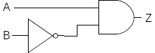
This circuit generates a 1 whenever input A is 1 and B is 0. Under all other circumstances, it produces a 0. The following figure illustrates a complete xor circuit, which contains the two sub-circuits joined together by an or gate. This is reasonable since the xor can be true either by way of the first sub-circuit or the second. Note that due to the manner in which the two sub-circuits were constructed, it is impossible for both of them to be true at the same time.
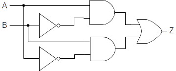
The Boolean expression for this circuit is \(Z =(A⋅\bar B)+(\bar A⋅B)\) .